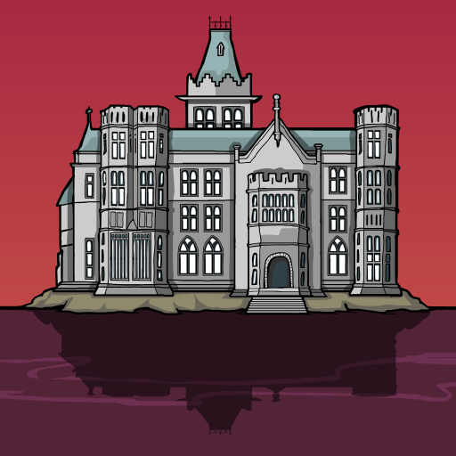

“Make sure every dinner is worth dying for.”
Rusty Lake Hotel é um jogo de aventura e puzzles desenvolvido pela Rusty Lake. Lançado em 2015, o jogo leva o jogador para um misterioso hotel localizado às margens de Rusty Lake. O hotel recebe cinco convidados durante uma semana. O que parece ser uma estadia luxuosa rapidamente se transforma em uma experiência sinistra. Como funcionário do hotel, o jogador precisa preparar os quartos e ajudar Mr. Owl a organizar a estadia dos convidados. Porém, cada hóspede esconde seus próprios segredos, e o hotel possui um propósito muito mais sombrio do que aparenta.
O misterioso Mr. Owl administra o Rusty Lake Hotel e recebe cinco convidados especiais para uma estadia. Durante a semana, os hóspedes são convidados a participar de jantares preparados pelo hotel. Porém, existe um segredo por trás dessa hospitalidade. O jogador precisa preparar cada hóspede para o jantar, seguindo as instruções recebidas e explorando seus quartos. Conforme os dias passam, os acontecimentos ficam cada vez mais estranhos. A verdadeira finalidade da estadia começa a ser revelada através dos hóspedes, dos funcionários e dos acontecimentos dentro do hotel.
O Rusty Lake Hotel é o principal cenário do jogo. O estabelecimento possui diferentes quartos, áreas de serviço e espaços destinados aos hóspedes. Apesar de sua aparência elegante, existe uma atmosfera constantemente estranha e inquietante. O hotel funciona quase como um personagem da própria história: cada ambiente esconde objetos, pistas e acontecimentos importantes para compreender o que está acontecendo.